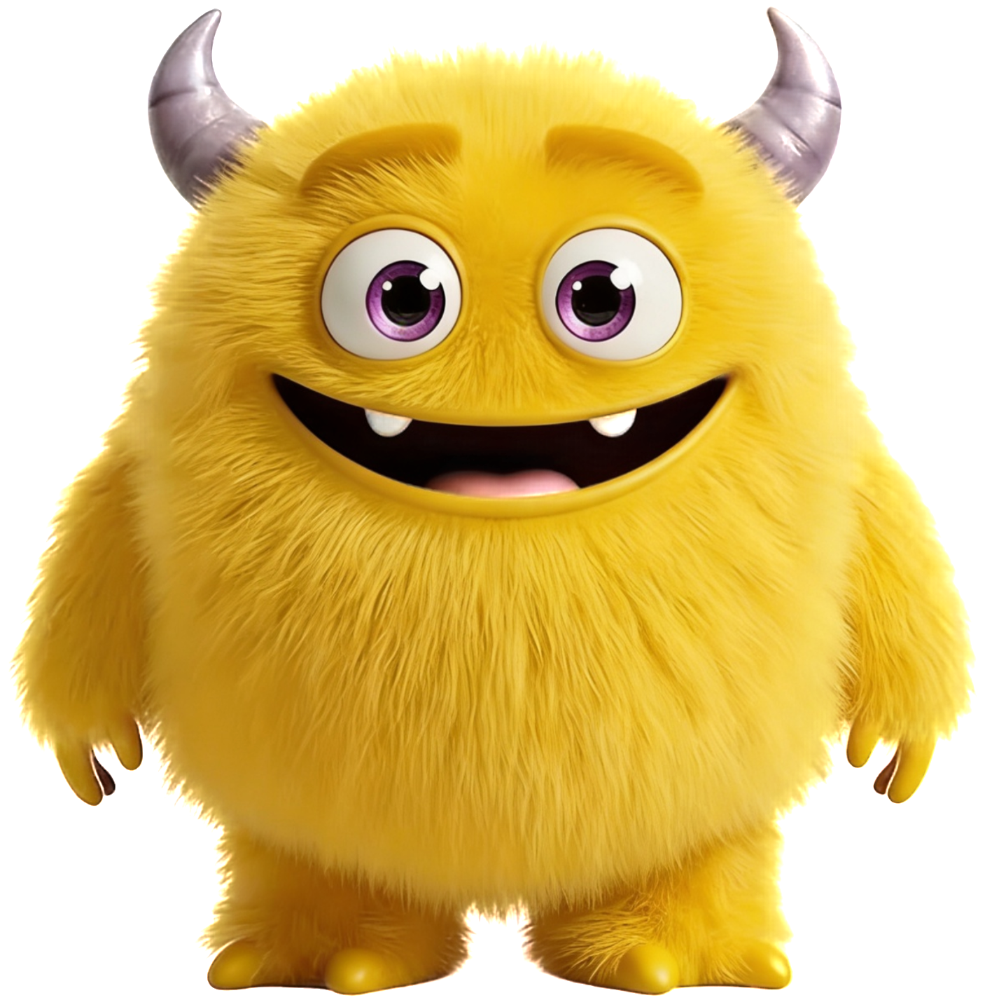

一、計畫背景與核心問題
在數位媒體高度滲透的環境中，2–5 歲幼兒已習慣透過卡通與影音認識世界，但這樣的學習多停留在觀看與模仿，缺乏進一步的情緒理解、身體感受與關係互動。孩子雖然看得懂角色情緒，卻未必能將這些情緒連結到自己的經驗中；家長雖然陪伴在旁，也常因缺乏引導工具而只能用制止、安撫或轉移注意力來處理孩子的情緒反應。
幼兒的情緒經驗無法從被動觀看轉化為主動理解與調節，而親子之間也缺乏一套能共同使用的情緒語言與互動機制。
計畫願景
- 讓孩子從只是看到情緒走向能辨認自己的情緒。
- 讓家長從壓制情緒轉向陪孩子理解情緒。
- 建立一套可被家庭反覆使用的共同情緒語言。
- 把螢幕從單純娛樂媒介轉化成可延伸的情緒教育工具。
二、問題分析
幼兒情緒辨識與表達能力不足
2–5 歲幼兒的語言能力與抽象理解尚在發展中，雖然可以辨識簡單表情，卻不容易說出自己為什麼生氣、難過或害怕，因此常以哭鬧、退縮或攻擊行為來取代情緒表達。
親子之間缺乏共同的情緒語言
許多家長在面對孩子哭鬧時，會習慣說出不要哭、不可以生氣等語句。這類語言雖然出自關心，卻容易讓孩子把情緒理解為不能出現的東西。
螢幕使用與情緒教育之間存在斷裂
現代幼兒已大量接觸動畫與影音內容，但多數內容停留在娛樂觀看，缺乏從螢幕內容轉換到真實生活練習的設計，無法形成具體可運用的情緒能力。
三、對應解方
1. 個體層解方：情緒角色化，降低表達門檻
透過 AI 情緒吉祥物設計，將抽象情緒轉化為孩子可辨識、可投射、可互動的角色，例如開心怪、生氣怪、難過怪、害怕怪、挫折怪與厭惡怪。孩子不需要直接說出複雜的情緒敘述，也能用角色來表達自己的內在狀態。
2. 互動層解方：建立親子共同語言
將情緒教育從單向糾正改為雙向對話。家長不再只說不要哭，而是學會透過角色語言詢問孩子，例如你是不是有一點難過怪、是不是生氣怪跑出來了。這樣的溝通方式能讓情緒從衝突對立，轉向理解與陪伴。
3. 結構層解方：建立螢幕到生活的轉換機制
本計畫不把動畫當作終點，而是當作入口。孩子先透過動畫辨識角色，再透過現場活動與實體道具進行情緒模擬與身體練習，最後延伸到家庭中的日常應用，形成從觀看、互動到內化的完整學習歷程。
以 AI 角色降低理解門檻，以互動設計建立共同語言，以實體活動完成情緒教育的內化過程。
四、情緒怪獸範例圖
本計畫透過六種核心情緒怪獸，幫助幼兒將抽象的情緒轉化為具體可辨識的角色，建立情緒理解、表達與調節的基礎。

開心怪（Happy）
代表快樂、興奮與滿足，幫助孩子辨識正向情緒與分享喜悅。

難過怪（Sad）
代表失落、委屈與悲傷，讓孩子理解難過其實也是需要被接住的感受。
生氣怪（Angry）
代表憤怒、不滿與界線被碰觸時的反應，幫助孩子認識情緒爆發背後的需求。
害怕怪（Fear）
代表恐懼、緊張與不安，幫助孩子辨識需要安全感與陪伴的時刻。

挫折怪（Frustration）
代表卡住、做不到與不順利時的情緒，讓孩子理解失敗與努力的關係。
厭惡怪（Disgust）
代表排斥、不喜歡與想遠離的感受，幫助孩子建立偏好、身體界線與自我保護。
五、利害關係人分析
幼兒
面臨的問題：不易辨識與表達情緒，常以行為取代表達。
可獲得的價值：透過角色與活動，逐步學會認識、說出與調節情緒。
家長
面臨的問題：知道孩子有情緒，但不一定知道怎麼引導與回應。
可獲得的價值：獲得一套容易操作的情緒陪伴工具與對話語言。
教育工作者／幼兒園
面臨的問題：情緒教育教材常偏抽象，且難以和家庭延續銜接。
可獲得的價值：導入兼具趣味與實用性的教案與工作坊形式。
社區與政府單位
面臨的問題：早期情緒支持資源不足，家庭教育資源分布不均。
可獲得的價值：建立可擴散、可進入不同社群的情緒教育模式。
六、設計流程與服務流程
設計思考流程
Empathize 同理
觀察幼兒在情緒來臨時的反應方式，理解家長在陪伴過程中的焦慮與困難。
Define 定義
重新界定問題，不是孩子愛哭鬧，而是缺乏適合幼兒與家庭共同使用的情緒學習媒介。
Ideate 發想
以 AI 情緒角色、動畫敘事、實體互動與親子共學作為核心設計方向。
Prototype 原型
發展動畫、角色卡、情緒道具、工作坊流程與家庭延伸教具，並持續修正。
服務流程
動畫觀看
以故事與角色引發共感，讓孩子先辨識情緒樣貌。
角色互動
透過情緒卡、玩偶或道具進行投射與命名。
身體活動
加入呼吸、吹氣、模仿等活動，讓情緒被身體感受與調節。
親子對話
以共同語言回到家庭情境，形成可以延續的日常練習。
七、社會影響力
短期影響
- 提升幼兒辨識基本情緒的能力。
- 增加孩子表達情緒的意願。
- 降低情緒爆發時的無助感與混亂感。
中期影響
- 改善親子互動品質與溝通方式。
- 降低日常衝突中的情緒誤解。
- 讓家庭建立可持續使用的情緒語言。
長期影響
- 促進幼兒情緒調節能力與心理韌性。
- 提升早期情緒教育的社會重視程度。
- 降低未來因情緒失調產生的人際與教育成本。
八、結語
《我的情緒百寶箱》不只是希望孩子認識幾個情緒名詞，而是希望他們在被理解的過程中，慢慢學會理解自己；也不只是教家長如何安撫孩子，而是讓家長和孩子一起建立可以陪伴彼此的情緒語言。
我們不是在教孩子不要哭、不要生氣，而是讓他們知道，情緒可以被看見、被理解，也可以慢慢學會和它相處。